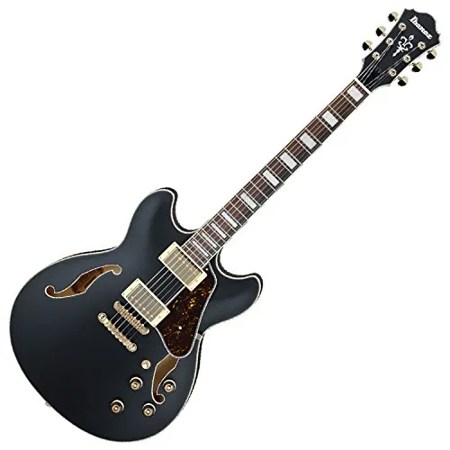

Le chitarre elettriche hollow body ("corpo vuoto/cavo") o semiacustiche presentano una parte o la totalità del corpo vuota, con uno o due tradizionali fori di risonanza a forma di f posti ai lati delle corde, similmente ai fori presenti su altri strumenti a corda, come il violino.
Le hollow body sono storicamente derivate dalle archtop e differiscono da queste ultime perché la tavola armonica (e di solito anche il resto della cassa) è costruita in laminato e non in legno massello, per limitare il feedback acustico.
la cassa vuota tende infatti a creare alcuni problemi a causa della risonanza delle vibrazioni e ciò è meno evidente se la cassa è in laminato piuttosto che in massello.
L'effetto di distorsione risulta in ogni caso difficile da ottenere e da controllare.
Nel corso degli anni, tuttavia, sono stati realizzati modelli decisamente più "spinti" e con un suono molto più pieno i quali, attraverso alcuni espedienti tecnici (quali la particolare conformazione interna della cassa armonica), riescono a ovviare a questo problema